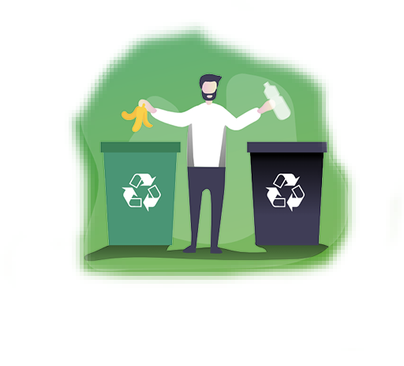
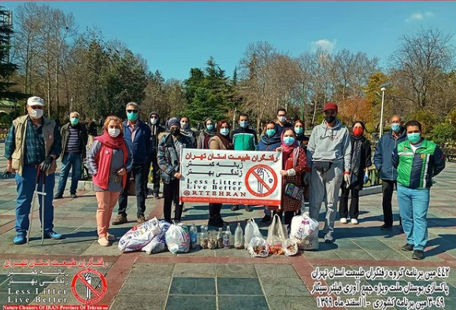
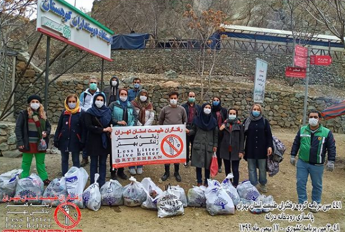
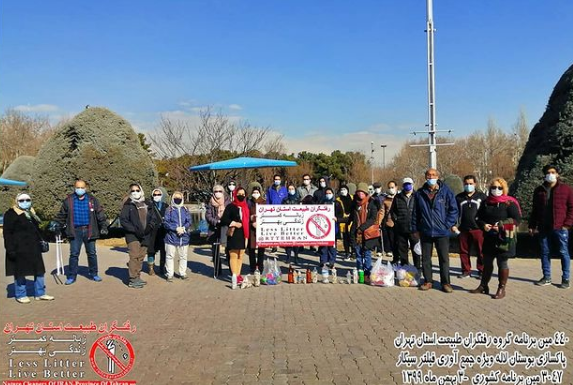
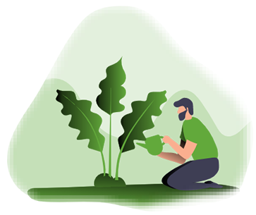

چکیده ای از راه حل ها
لورم ایپسوم متن ساختگی با تولید سادگی نامفهوم از صنعت چاپ، و با
استفاده از طراحان گرافیک است، چاپگرها و متون بلکه روزنامه و مجله در
ستون و سطرآنچنان که لازم است، و برای شرایط فعلی تکنولوژی مورد نیاز،
و کاربردهای متنوع با هدف بهبود ابزارهای کاربردی می باشد، کتابهای
زیادی در شصت و سه درصد گذشته حال و آینده، شناخت فراوان جامعه و
متخصصان را می طلبد، تا با نرم افزارها شناخت بیشتری را برای طراحان
رایانه ای علی الخصوص طراحان خلاقی، و فرهنگ پیشرو در زبان فارسی ایجاد
کرد، در این صورت می توان امید داشت که تمام و دشواری موجود در ارائه
راهکارها، و شرایط سخت تایپ به پایان رسد و زمان مورد نیاز شامل
حروفچینی دستاوردهای اصلی، و جوابگوی سوالات پیوسته اهل دنیای موجود
طراحی اساسا مورد استفاده قرار گیرد.

زمین تمیز

لورم ایپسوم متن ساختگی با تولید سادگی نامفهوم از صنعت چاپ، و با
استفاده از طراحان گرافیک است، چاپگرها و متون بلکه روزنامه و مجله در
ستون و سطرآنچنان که لازم است، و برای شرایط فعلی تکنولوژی مورد نیاز،
و کاربردهای متنوع با هدف بهبود ابزارهای کاربردی می باشد، کتابهای
زیادی در شصت و سه درصد گذشته حال و آینده، شناخت فراوان جامعه و
متخصصان را می طلبد، تا با نرم افزارها شناخت بیشتری را برای طراحان
رایانه ای علی الخصوص طراحان خلاقی، و فرهنگ پیشرو در زبان فارسی ایجاد
کرد، در این صورت می توان امید داشت که تمام و دشواری موجود در ارائه
راهکارها، و شرایط سخت تایپ به پایان رسد و زمان مورد نیاز شامل
حروفچینی دستاوردهای اصلی، و جوابگوی سوالات پیوسته اهل دنیای موجود
طراحی اساسا مورد استفاده قرار گیرد.
تصاویر رفتگران طبیعت



×
هدف ما از این وبلاگ
لورم ایپسوم متن ساختگی با تولید سادگی نامفهوم از صنعت چاپ، و با
استفاده از طراحان گرافیک است، چاپگرها و متون بلکه روزنامه و مجله در
ستون و سطرآنچنان که لازم است، و برای شرایط فعلی تکنولوژی مورد نیاز،
و کاربردهای متنوع با هدف بهبود ابزارهای کاربردی می باشد، کتابهای
زیادی در شصت و سه درصد گذشته حال و آینده، شناخت فراوان جامعه و
متخصصان را می طلبد
کاری که میتونیم انجام بدیم
لورم ایپسوم متن ساختگی با تولید سادگی نامفهوم از صنعت چاپ، و با
استفاده از طراحان گرافیک است، چاپگرها و متون بلکه روزنامه و مجله در
ستون و سطرآنچنان که لازم است، و برای شرایط فعلی تکنولوژی مورد نیاز، و
کاربردهای متنوع با هدف بهبود ابزارهای کاربردی می باشد، کتابهای زیادی
در شصت و سه درصد گذشته حال و آینده، شناخت فراوان جامعه و متخصصان را می
طلبد، تا با نرم افزارها شناخت بیشتری را برای طراحان رایانه ای علی
الخصوص طراحان خلاقی، و فرهنگ پیشرو در زبان فارسی ایجاد کرد، در این
صورت می توان امید داشت که تمام و دشواری موجود در ارائه راهکارها، و
شرایط سخت تایپ به پایان رسد و زمان مورد نیاز شامل حروفچینی دستاوردهای
اصلی، و جوابگوی سوالات پیوسته اهل دنیای موجود طراحی اساسا مورد استفاده
قرار گیرد.
